HISTORY
POKI制作の経緯
以前から、ロボットに生物らしさを取り入れた「いきもの」のようなロボットを作りたいと考えていましたが、なかなかその一歩を踏み出せずにいました。そんな中、「好きなロボットをチームで作る」という授業が始まりました。授業内で様々なロボットを見た中で、アメリカの某テーマパークのロボットを見た瞬間、「かわいい！」「作りたい！」と強く感じました。同じように心がときめいたメンバーと共に、「可愛いロボット」を制作するプロジェクトがスタートしました。
POKI制作の目的
・授業や部活動で学んだ知識と技術を最大限に活用し、ロボットを作り上げる。
・制作の過程で、新たな知識をどんどん吸収し、初めて関わるメンバーから刺激や新しい視点を得て、成長する。
担当箇所
そもそも、「かわいい」とは何かを考えてみると、人間は外見だけでなく動作からも「かわいい」と感じることがあります。今回のロボット制作では、特に「動作的なかわいさ」に注目しました。また、ロボットとコミュニケーションをとれることが、ロボットに対して愛着を持つことに繋がると考えました。
そこで、ロボットの頭に搭載したカメラで画像処理を行い、コミュニケーションが可能になる機能を実装することに決定し、その部分を担当することになりました。
作成プログラム集

過程
-
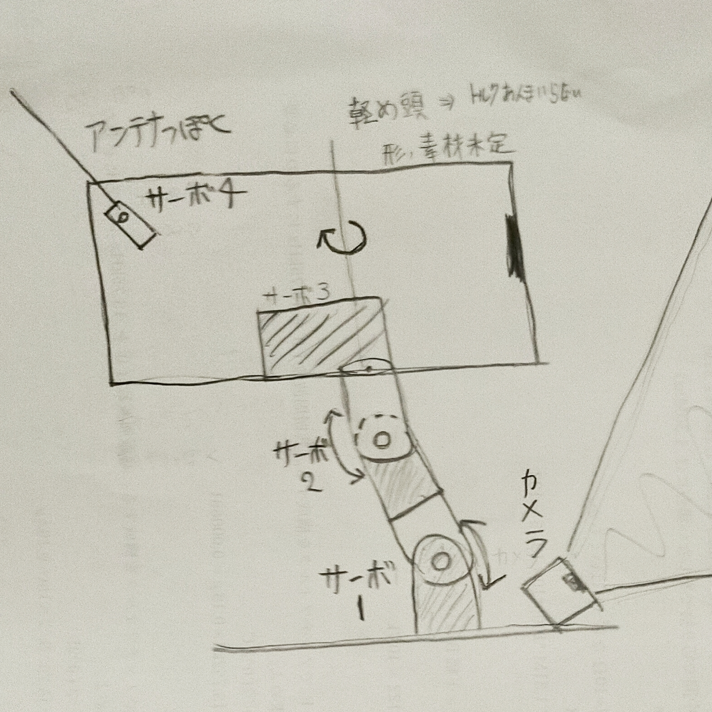
- 頭のデザイン考案
- デザイン考案はワクワクする。
-
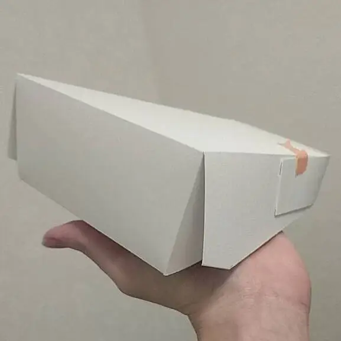
- プロトタイプの作成
- 造形演習の授業を思い出す。
-

- 生き物っぽく動かす
- arduinoと家にあるサーボ組み立て生き物っぽく動かしてみる。
-
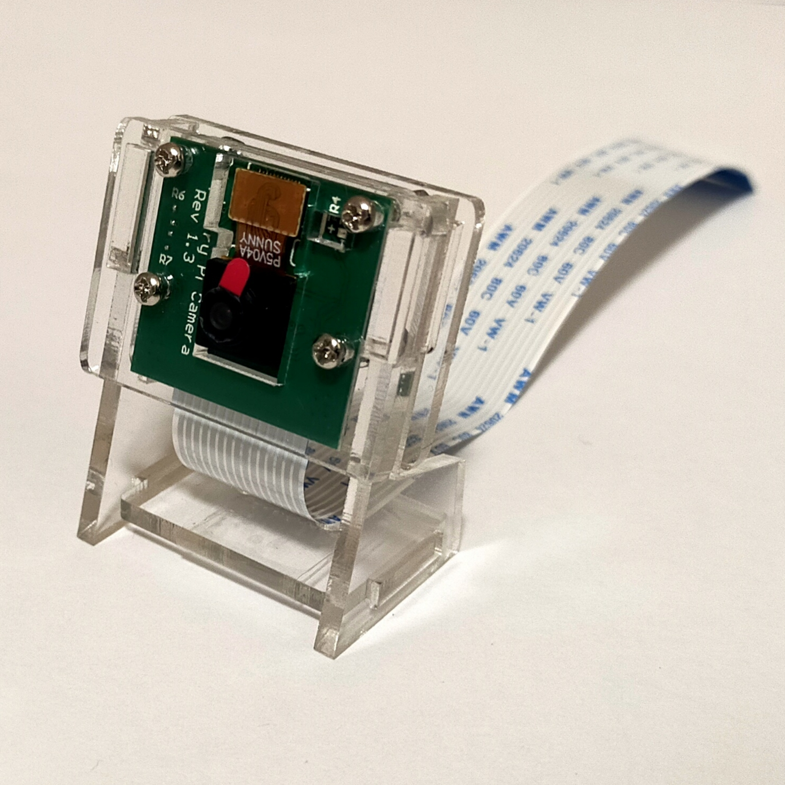
- PIカメラ使ってみた
- ラズパイ4(ubuntu20.04)にPIカメラモジュール使ってみる。
-

- arduino-ラズパイ通信
- arduinoとラズパイを通信してみる
-

- 赤色に頭向ける
- ラズパイで画像処理、arduinoでサーボ制御する。
-
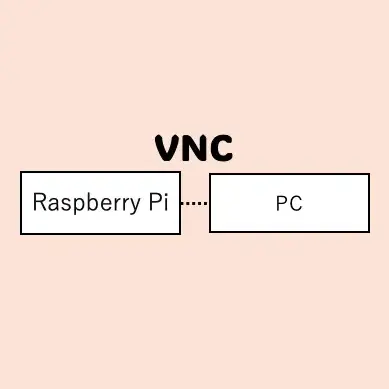
- VNC接続-mac
- 学校でモニターなしにでラズパイ触るために。
-
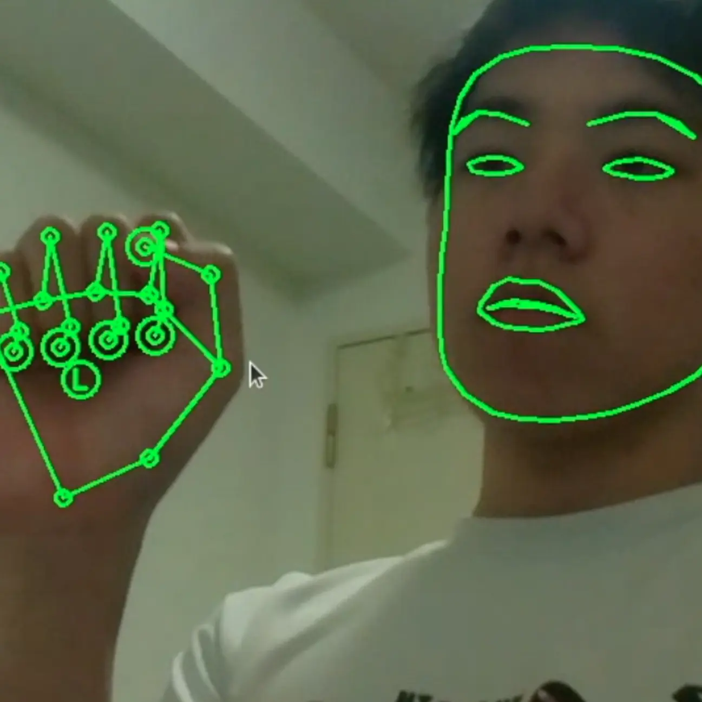
- PIカメラで顔・手認識
- PIカメラでmediapipeを用いて顔・手認識する。
-
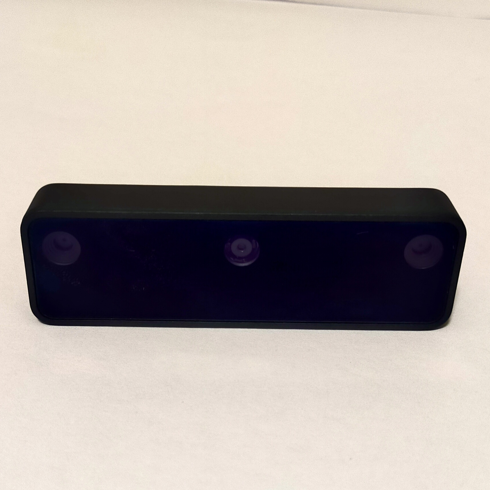
- OAK-D-LITEに変更
- PIカメラではラグを感じたのでOAK-D-LITEに変更する。
-
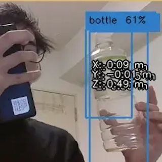
- OAK-D-LITEで遊ぶ
- ラズパイでもさくさく動いていいね。
-
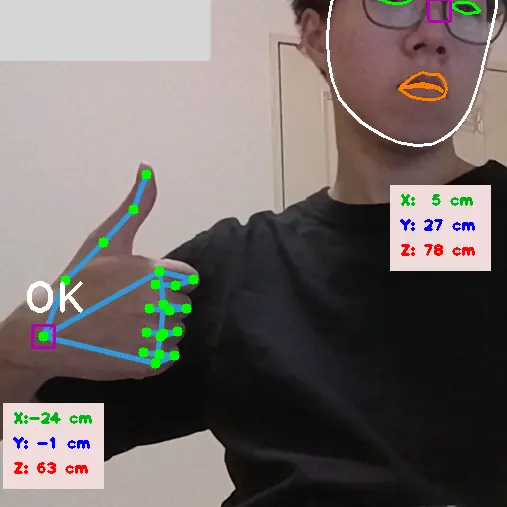
- OAKで顔・手認識
- OAK-D-LITEで顔・手認識する。
-
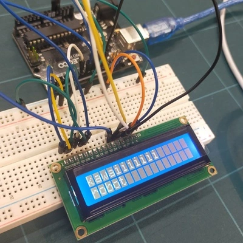
- ディスプレイ使用
- デバック用に使ってみる。
-
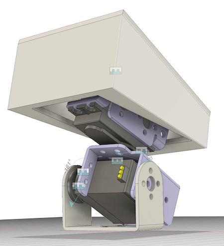
- ポキヘッド進化
- 最初のデザインに近い形の頭を作ってみた。
-

- 顔追従
- 顔追従できるようにしてみた。
-

- ジェスチャー送信
- ラズパイの画像処理情報をarduinoに送りディスプレイに表示する。
-
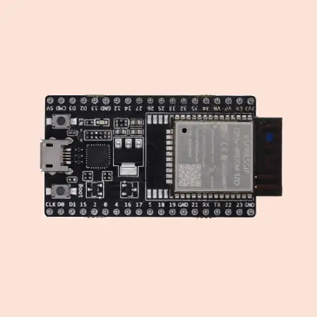
- ESP32で遊ぶ
- サーボ・シャープの距離センサー・IRセンサー・マルチコアなどなど
-
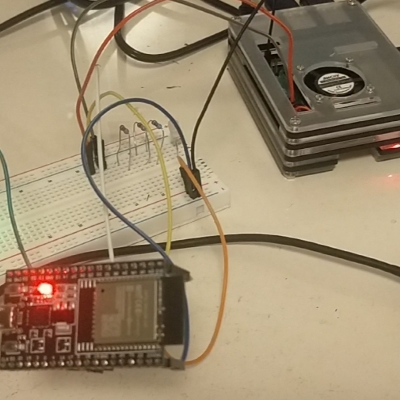
- ESP32-ラズパイ通信
- 基盤が作りやすいとのことでTX2-RX2で通信する。
-
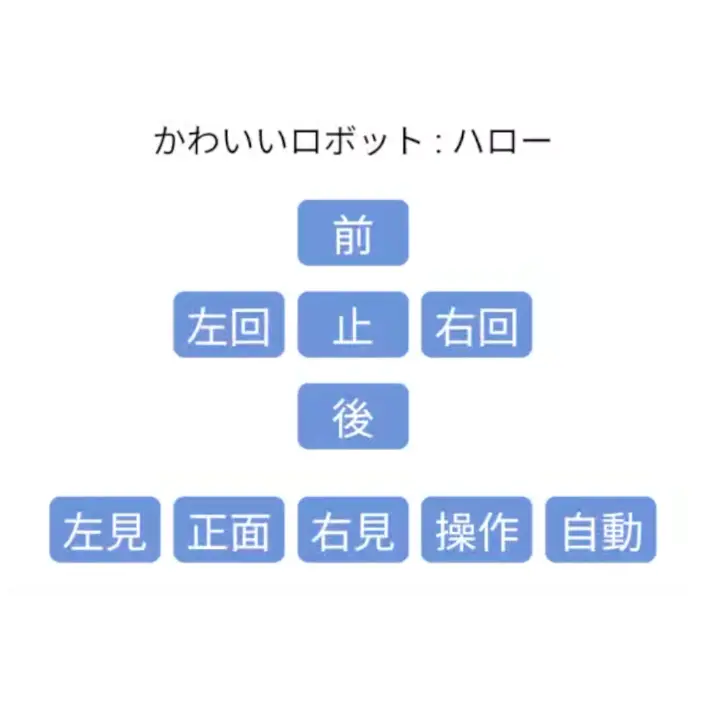
- ESP32で遠隔操作
- ESPでwebサーバーをたて遠隔操作する。
-
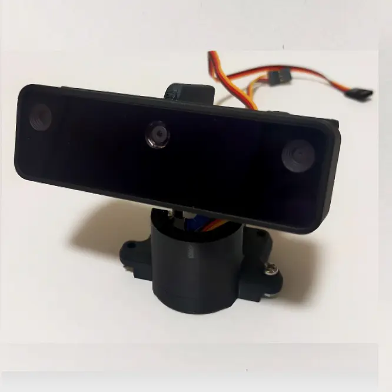
- 新POKIヘッド
- POKIヘッド完成版をハード班が作ってくれた。
可愛い
-

- デモに向けて
- 今までの進捗を組み合わせデモ発表に向けて仕上げる。
-
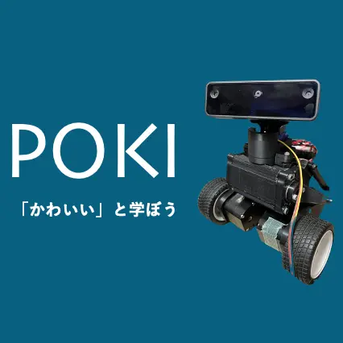
- このサイトの作成
- POKIに愛着が湧きサイトを作りたくなった。
-
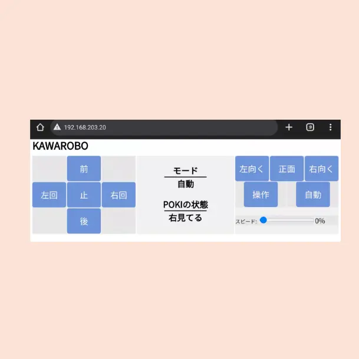
- 操作画面アップデート
- html・cssに慣れてきたので操作画面を見やすく操作しやすくした。